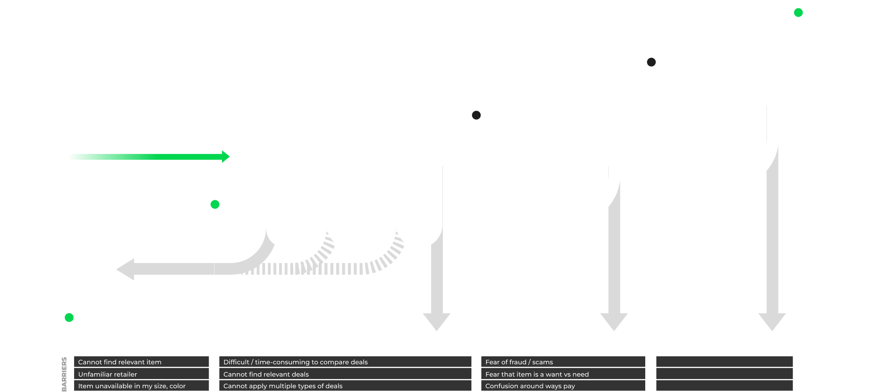
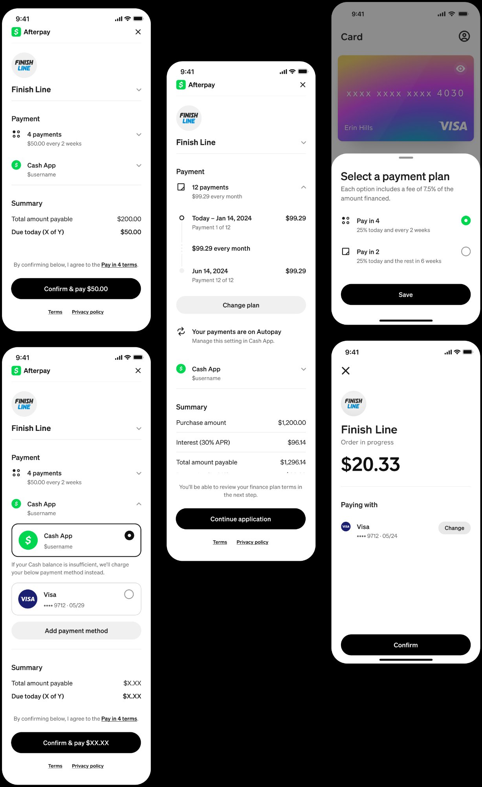

Turning cart abandoners into customers. What began as one-click checkout had become cluttered and harder to use for anyone who didn't have everything set up perfectly. We stepped back and listened to merchants and customers then redesigned Express checkout to be fast for returning users and flexible enough for every merchant setup.
ConversionMobile designResearchScalable for diverse merchant needs
My role
Lead designer (sole designer)
Team
1 PM, 6 engineers
Timeline
2021 to 2024 (ongoing iterations)
What we noticed
In 2021, with checkout fully ramped up, we stepped back to look at the market and our own data. Express had a problem. Many of the customers we interviewed used Afterpay for convenience as well as for buy now pay later, yet Express asked for more checks and sometimes more effort from people who didn't have everything set up from the start.
Three signals pointed the same way:
Merchants told us customers dropped off at checkout when it was time to enter their details.
Returning users were frustrated at re-entering information, especially when they'd used Afterpay before.
The conversion data agreed, with drop-off spiking whenever address or payment fields were required.
We saw a chance to build a lightweight checkout that's fast enough for repeat users and flexible enough for different merchant setups.

Buyer journey research: mapping the full path from motivation to purchase, with decision points, barriers, and abandonment zones.

Express checkout across multiple configurations: payment plan selection, Cash App pay integration, and single-screen confirmation flows.
What I did
1
Streamlined the checkout flowI cut the steps and inputs across the main returning-user journey. I used Fullstory and UXR to guide the design and the product direction, so decisions came from where users actually dropped off instead of assumptions.
2
Merchant configuration supportI worked with the sales and integration teams on patterns that adapt to different merchant setups, from digital goods and deferred shipping to store pickup and everything between.
3
Usability testing and iterationI ran usability testing at key decision points and refined the flows using real conversion data as well as what people told us.
4
Address management evolutionThe first version had little flexibility for shipping or pickup variations. As more merchants joined the edge cases multiplied, like digital goods, deferred shipping and store pickup. I designed modular address flows that adapt to any order type while keeping checkout quick and easy.
5
Address patterns I shippedModular flows for shipping, pickup and digital goods as well as flexible patterns for choosing delivery and showing locations. They're ready for new merchant and regional needs and keep each merchant's own logic.
"Express checkout doubled cart conversion and reduced abandonment by 23%."Merchant Reporting and Mastercard Express Checkout Impact Report, 2021
Optimisation highlights
2022
One-tap revamp, 2 fewer form steps+110 bps conversion lift.